18/02/2025 — Sau khi xem điện tâm đồ này, bạn có cân nhắc dùng thuốc nào không?
Bản dịch tiếng Việt của bài "After seeing this ECG, are there any medications you would consider giving?" – Dr. Smith’s ECG Blog. Giữ nguyên toàn bộ 12 hình ảnh của bản gốc.
Tác giả: Willy Frick
Một người đàn ông ở độ tuổi 50 mắc COPD nhập viện vì chóng mặt và tụt huyết áp. Ông đã làm việc ca đêm hôm trước và đến bệnh viện sau khi hết ca. Huyết áp đo được đầu tiên là 88/53 mm Hg.
Đây là điện tâm đồ lúc nhập viện của ông:

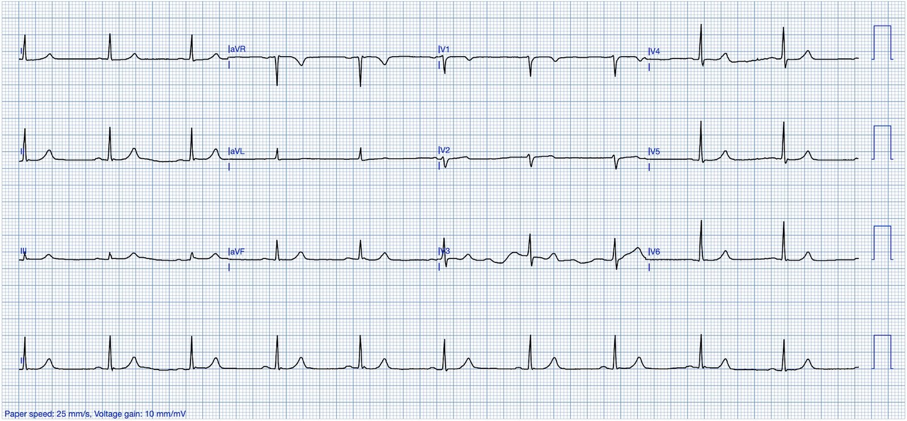
Bạn nghĩ gì?
Điện tâm đồ cho thấy nhịp xoang. Các sóng T đối xứng đáng ngờ, nhưng trông không tối cấp. Trái với sóng T tối cấp vốn đặc trưng là có đáy rộng (Dr. Smith mô tả chúng như “được bơm căng phồng không khí”), các sóng T này có đáy rất hẹp. Phần lõm đặc biệt rõ. Tóm lại, điện tâm đồ này gợi ý (nhưng có lẽ chưa đủ để chẩn đoán) tăng kali máu.
Tôi đã gửi điện tâm đồ này cho Dr. Meyers mà không kèm bối cảnh lâm sàng, và ông trả lời “có thể có ảnh hưởng của tăng kali máu nhẹ.” Đây là một điện tâm đồ cực kỳ tinh tế. Tuy nhiên, chúng ta có thể làm việc của mình dễ hơn một chút bằng cách so sánh với một điện tâm đồ cũ.

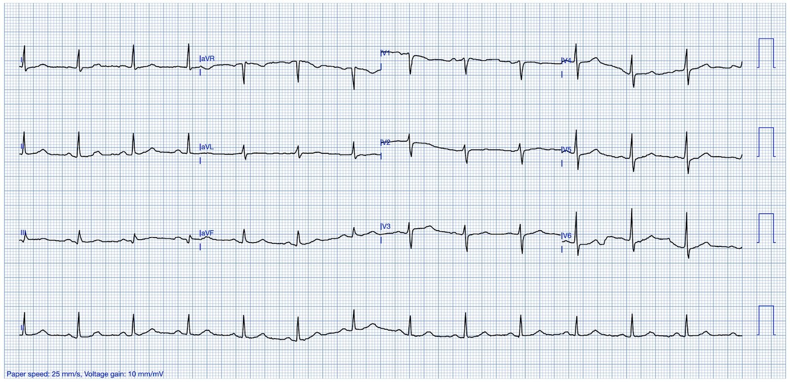
Đây là các chuyển đạo đặt cạnh nhau:

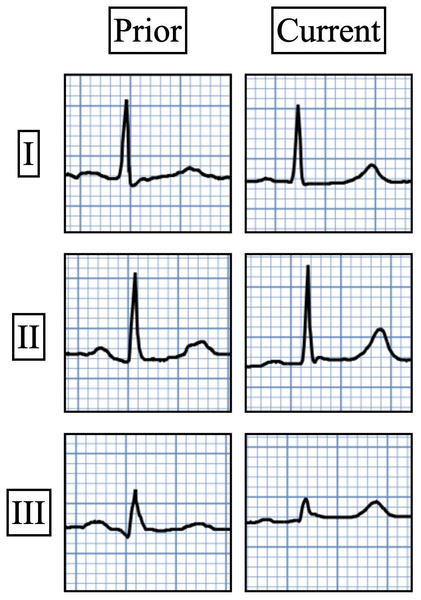

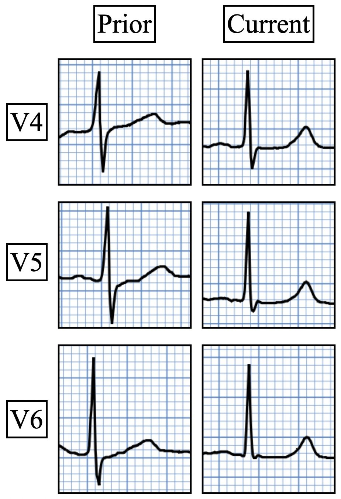
Sự so sánh liên tiếp này làm tăng đáng kể mức nghi ngờ tăng kali máu, làm nổi bật mức độ nhọn rõ rệt của sóng T so với trước.
Bệnh nhân được điều trị bằng methylprednisolone, ipratropium-albuterol và 1 L nước muối sinh lý (NS). Bốn mươi lăm phút sau, huyết áp tăng lên 157/125 mm Hg, nhưng tần số tim lúc này chỉ còn 30 mấy lần/phút. Điện tâm đồ được ghi lại.

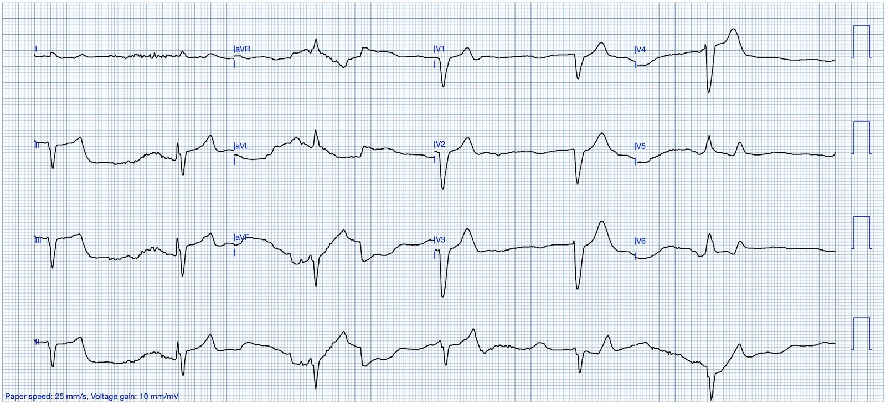
Đây là một điện tâm đồ chất lượng rất kém, làm hạn chế việc đọc. Lẽ ra phải ghi lại ngay lập tức. Tuy nhiên, ít nhất chúng ta có thể đưa ra các nhận xét sau:
- QRS đã giãn rộng
- Không còn nhận ra được sóng P nào nữa
- Tần số thất chậm hơn nhiều, khoảng 30 mấy lần/phút
Đây đều là những đặc điểm của tăng kali máu. Nếu trước đó chúng ta còn nghi ngờ, thì giờ đã chắc chắn. Bệnh nhân cần calci ngay lập tức. Mặc dù xét nghiệm đã được lấy máu khi đến khoa cấp cứu (ED), bệnh viện này rõ ràng có phòng xét nghiệm rất chậm và kết quả vẫn chưa có (và phải nửa giờ nữa mới có). Điện tâm đồ này đã không được nhận ra là cho thấy tăng kali máu.
Thay vào đó, bệnh nhân được dùng atropine và tần số tim tăng lên 80 mấy lần/phút. Huyết áp đo được tiếp theo là 211/175 mm Hg, và để đáp lại, bệnh nhân được bắt đầu truyền nitroglycerin liên tục. Tần số tim lại giảm xuống 30 mấy lần/phút, và ông bị ngừng tim. Ông được hồi sinh tim phổi và đặt nội khí quản. Điện tâm đồ ghi lại được trình bày dưới đây:

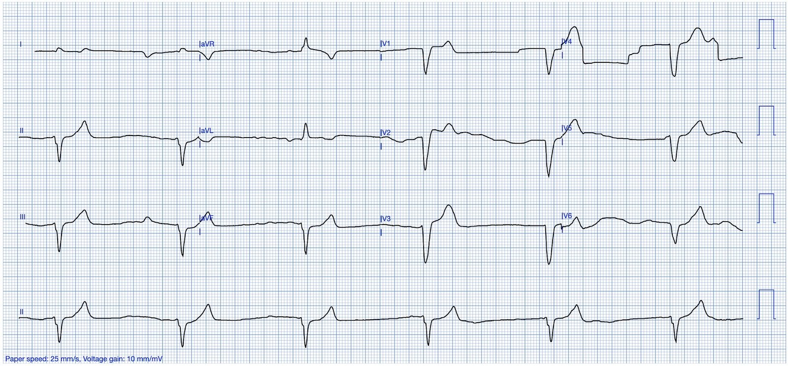
Nó trông tương tự bản trước, nhưng ít nhiễu hơn. Vào lúc này, phòng xét nghiệm gọi báo kali ở mức nguy kịch 6.8 mEq/L và cuối cùng bệnh nhân mới được tiêm tĩnh mạch 2 g. Điện tâm đồ ghi lại được trình bày dưới đây.

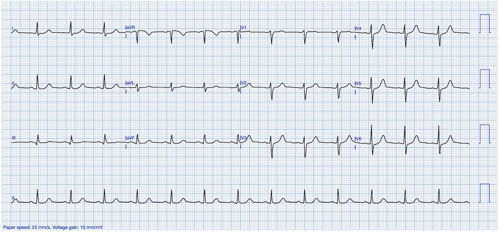
Tốt hơn nhiều! Mặc dù QRS đã hẹp lại và nút xoang đã hoạt động trở lại, vẫn còn ST chênh xuống dốc lên kín đáo ở các chuyển đạo trước tim phía bên và sóng T còn hơi nhọn. Kết cục lâu dài của bệnh nhân không rõ.
Bàn luận:
Đây là một ca có điện tâm đồ ban đầu cho thấy các dấu hiệu rất kín đáo của tăng kali máu. Chỉ trong 90 phút kể từ khi nhập viện, bệnh nhân đã tiến triển từ điện tâm đồ rất kín đáo đó đến ngừng tim. Dr. McLaren gần đây đã viết một bài blog xuất sắc về một ca tương tự. Một số người chủ trương rằng không nên dùng calci khi “chỉ” có sóng T nhọn, nhưng tôi không đồng ý. Nếu một bệnh nhân đến viện trong tình trạng nặng với điện tâm đồ như thế này, và nguyên nhân gây bệnh chưa rõ ngay, thì phù hợp nhất là dùng calci tĩnh mạch theo kinh nghiệm trong khi chờ kết quả các thăm dò tiếp theo. Nhận ra sớm hơn và điều trị sớm hơn có thể đã giúp bệnh nhân này tránh được ngừng tim.
Ứng dụng PMCardio có tên “Karl” hiện chẩn đoán tăng kali máu trên điện tâm đồ với độ chính xác cao. Karl xếp ca này vào vùng không xác định:
Những điểm cần học:
- Nhận ra các bằng chứng kín đáo trên điện tâm đồ của tăng kali máu
- Khi còn nghi ngờ, hãy dùng calci
Dưới đây là một vài ca tăng kali máu khác với sóng T nhỏ nhưng nhọn:
Một ca bi thảm, liên quan đến bài trước (ca này đặc biệt thú vị và khủng khiếp)

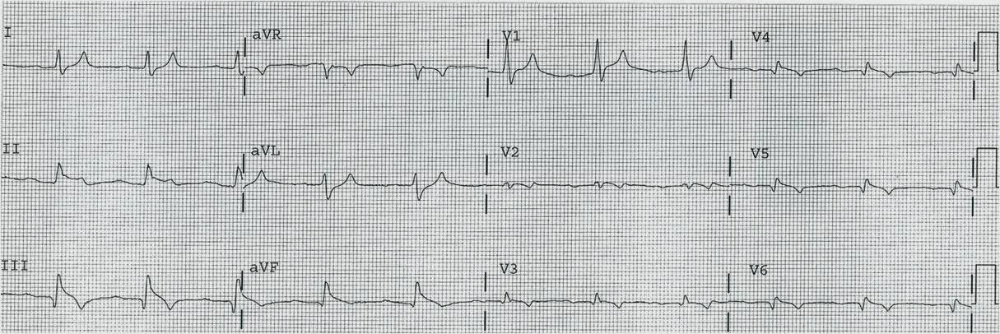
Bệnh nhân khó thở. Bạn được đưa một điện tâm đồ lúc phân loại (triage) được máy tính đọc là “bình thường”. (Bác sĩ cũng đọc là bình thường)

Đây là bản ghi ở một lần khám trước với K = 6.6:

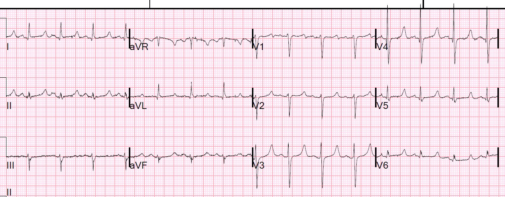
Sau điều trị:

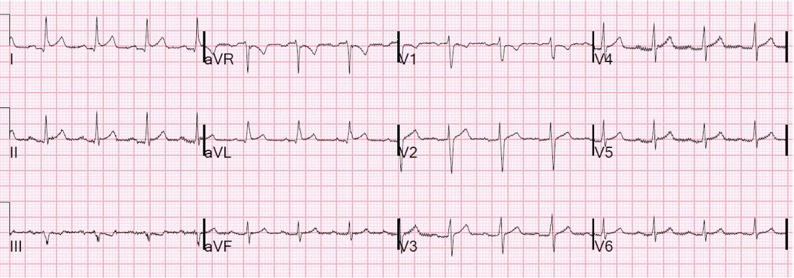
ST chênh lên ở I và aVL, với ST chênh xuống soi gương ở chuyển đạo III

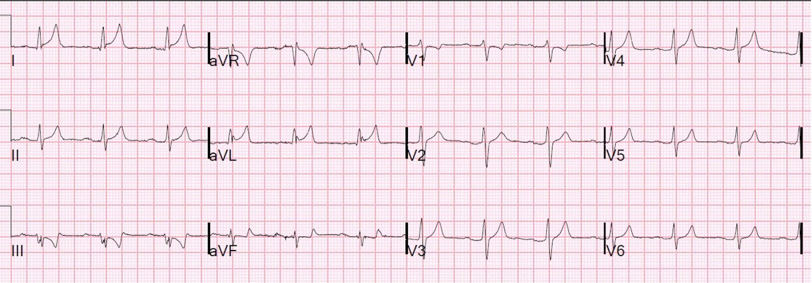
= = =
======================================
BÌNH LUẬN CỦA TÔI, bởi KEN GRAUER, MD (18/2/2025 — Cập nhật cho WordPress ngày 18/12/2025):
Luôn có những “bài học cần rút ra” từ nhiều bệnh cảnh lâm sàng khác nhau của tăng kali máu. Ca hôm nay của Dr. Frick làm nổi bật thực tế lâm sàng này ở một bệnh nhân có điện tâm đồ ban đầu dễ dàng bị coi là “bình thường”. Trong số các “bài học” từ ca hôm nay có những điều sau:
- Mặc dù nhiều bệnh nhân tăng kali máu diễn tiến theo đúng “trình tự kinh điển trong sách giáo khoa” của các thay đổi điện tâm đồ — một tỷ lệ đáng kể bệnh nhân lại không như vậy. Như tôi đã nhấn mạnh trong Bình luận của tôi ở bài đăng ngày 27 tháng Hai năm 2023 trên Dr. Smith’s ECG Blog — một số bệnh nhân có thể xuất hiện mọi thay đổi ngoại trừ QRS giãn rộng. Những bệnh nhân khác có thể không có sóng T nhọn — hoặc chỉ có dấu hiệu này như một thay đổi muộn. Và dù tăng kali máu nặng — một số bệnh nhân có thể không có bất kỳ thay đổi nào trên điện tâm đồ.
- Dù đã nói như trên — điện tâm đồ ban đầu hôm nay thực sự cho thấy sóng T nhọn ở 8/12 chuyển đạo! Như Dr. Frick và Dr. Meyers đã nêu — chính bức tranh tổng hợp (tức là, việc 8/12 chuyển đạo có sóng T nhọn kín đáo nhưng có thật) sẽ khiến người thầy thuốc tinh ý tự hỏi liệu đó có phải là nhiều hơn 5 hay 6 chuyển đạo so với mức bình thường để có sóng T dương, đối xứng và đều nhọn ở điểm cao nhất hay không (kèm một bài học khác là sóng T nhọn do tăng kali máu không nhất thiết phải cao).
- Việc tìm được một điện tâm đồ cũ của bệnh nhân hôm nay đã đơn giản hóa nhiệm vụ chẩn đoán của chúng ta — vì sự so sánh giữa điện tâm đồ cũ và hiện tại do Dr. Frick cung cấp không còn để lại nghi ngờ nào rằng đã có sóng T nhọn lan tỏa mới xuất hiện (với kết luận không thể tránh khỏi là biết chắc cần kiểm tra nồng độ K+ huyết thanh ngay lập tức).
- Dấu hiệu điện tâm đồ riêng biệt còn lại mà người thầy thuốc tinh ý sẽ nhận ra trên điện tâm đồ ban đầu hôm nay — là một đoạn ST dẹt một cách đặc biệt. Như tôi đã nhấn mạnh trong các bài đăng ngày 10 tháng Hai năm 2025 và ngày 19 tháng Ba năm 2019 — tăng kali máu và hạ calci máu thường xảy ra cùng nhau, và thường tạo ra một hình ảnh dễ nhận ra gồm đoạn ST dẹt kết thúc bằng sóng T nhọn mà chúng ta thấy trong ca hôm nay.
- Cuối cùng — Ca hôm nay cho thấy hậu quả của việc không lưu tâm đến các dấu hiệu điện tâm đồ có giá trị chẩn đoán tăng kali máu đáng kể (tiến triển nhanh đến nhịp chậm nặng — mất sóng P — QRS giãn rộng) — một lần nữa chứng minh sự cần thiết phải điều trị bằng calci tĩnh mạch mà không chờ phòng xét nghiệm xác nhận điều bạn đã biết từ diễn tiến rối loạn nhịp qua 2 điện tâm đồ (và nhu cầu dùng calci tĩnh mạch càng cấp bách hơn nhiều ở bệnh nhân hôm nay, người có điện tâm đồ ban đầu gợi ý Ca++ huyết thanh vốn đã thấp).
- = = =
- T.B. (P.S.): Chúng ta không được cung cấp thông tin trong ca này về việc TẠI SAO bệnh nhân này bị tăng kali máu! Vì vậy, một phần của việc đánh giá tại khoa cấp cứu cũng nên bao gồm việc đánh giá: i) Chức năng thận (đặc biệt là bất kỳ sự suy giảm chức năng thận gần đây nào có thể tạo điều kiện cho tăng kali máu); ii) Tình trạng thể tích dịch (tức là, giảm thể tích tuần hoàn có thể thúc đẩy tăng nồng độ K+ huyết thanh); iii) Có loại thuốc giữ K+ nào bệnh nhân có thể đang dùng không? (tức là, thuốc bổ sung K+? thuốc lợi tiểu giữ K+ hoặc thuốc ức chế men chuyển (ACE-Inhibitor) hoặc ARB); — và, iv) Bất cứ điều gì khác có khả năng tạo điều kiện cho sự xuất hiện âm thầm của tăng kali máu không được nghi ngờ.
= = =
= = =